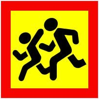

18. Проїзд пішохідних переходів і зупинок транспортних засобів
18.1. Водій транспортного засобу, що наближається до нерегульованого пішохідного переходу, на якому перебувають пішоходи, повинен зменшити швидкість, а в разі потреби зупинитися, щоб дати дорогу пішоходам, для яких може бути створена перешкода чи небезпека.
18.2. На регульованих пішохідних переходах і перехрестях при сигналі світлофора чи регулювальника, що дозволяє рух транспортним засобам, водій повинен дати дорогу пішоходам, які закінчують перехід проїзної частини відповідного напрямку руху і для яких може бути створена перешкода чи небезпека.
18.3. Проїжджаючи повз пішоходів, які не встигли закінчити перехід проїзної частини і вимушено перебувають на острівці безпеки або лінії, що розділяє транспортні потоки протилежних напрямків, водії повинні дотримувати безпечного інтервалу.
18.4. Якщо перед нерегульованим пішохідним переходом зменшує швидкість чи зупинився транспортний засіб, водії інших транспортних засобів, що рухаються по сусідніх смугах, повинні зменшити швидкість, а в разі потреби зупинитися і можуть продовжити (відновити) рух лише переконавшись, що на пішохідному переході немає пішоходів, для яких може бути створена перешкода чи небезпека.
18.5. У будь-якому місці водій повинен пропустити сліпих пішоходів, які подають сигнал тростиною білого кольору, спрямованою вперед.
18.6. Забороняється в’їжджати на пішохідний перехід, якщо за ним утворився затор, який змусить водія зупинитися на цьому переході.
18.7. Водії повинні зупинитися перед пішохідним переходом на сигнал, передбачений підпунктом “в” пункту 8.8 цих Правил, якщо така вимога надійшла від членів шкільного патруля, загону юних інспекторів руху, відповідним чином екіпірованих, або осіб, що супроводжують групи дітей, і дати дорогу дітям, які переходять проїзну частину дороги.
18.8. Водій транспортного засобу повинен зупинитися, щоб дати дорогу пішоходам, які йдуть з боку відчинених дверей до (або від) трамвая, що стоїть на зупинці, якщо посадка чи висадка проводиться з проїзної частини чи посадкового майданчика, розміщеного на ній.
Продовжувати рух дозволяється лише тоді, коли пішоходи залишать проїзну частину і в трамваї зачиняться двері.
18.9. Наближаючись до транспортного засобу з розпізнавальним знаком “Діти”, що зупинився з увімкненими проблисковими маячками оранжевого кольору та (або) аварійною світловою сигналізацією, водії транспортних засобів, що рухаються по суміжній смузі, повинні зменшити швидкість, а в разі потреби зупинитися, щоб уникнути наїзду на дітей.

Знак «Діти»